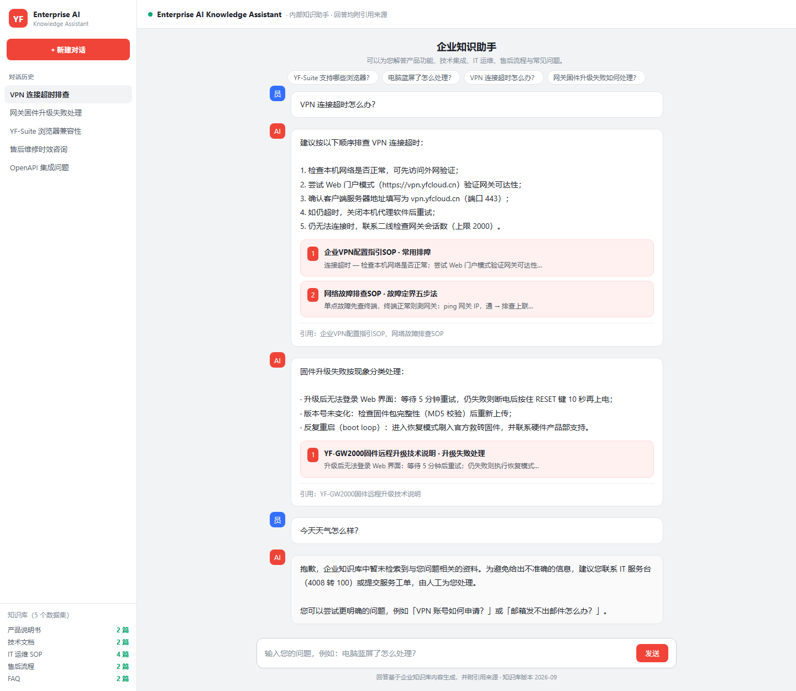
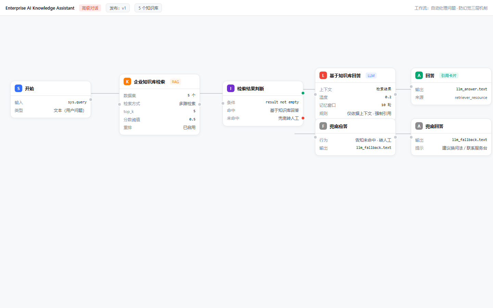
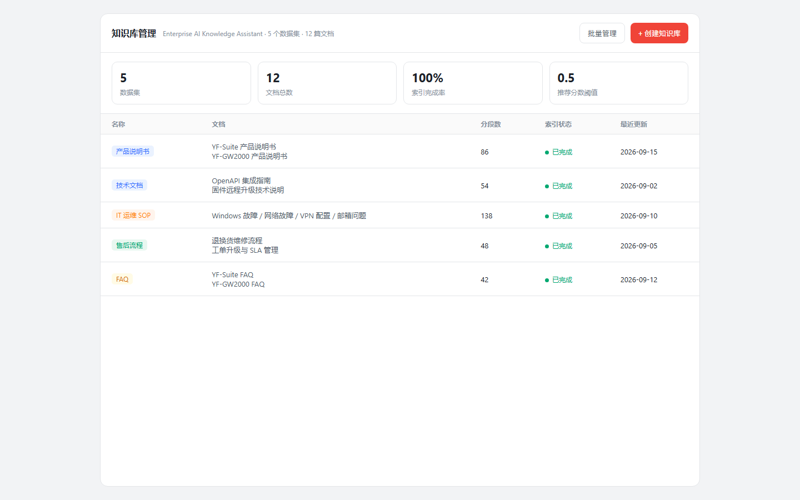

基于 Dify 平台改造的企业文档智能问答系统：员工与一线客服通过自然语言查询产品说明书、技术文档、IT 运维 SOP、售后流程与 FAQ。回答基于知识库生成并强制附引用来源，检索不到依据时自动转人工——从机制上减少 AI 幻觉。
大量文档分散在网盘、Wiki、邮件与老员工经验中，员工与客服的检索成本高、回答口径不一致、高频问题重复消耗人力。
说明书、SOP、FAQ 散落多处，检索一次平均 15-30 分钟。
相同问题不同人回答不一致，SOP 更新后旧内容仍被引用。
高频问题占一线人力 40% 以上，重复回答、效率低。
通用大模型直接问答会编造，必须基于企业知识库 + 引用溯源。
应用工作流（DSL）串联检索、路由与生成：命中知识库即给出带引用的回答，未命中自动转人工。
自然语言输入 sys.query，10 轮对话记忆
→5 数据集多路检索 · top_k=5 · 分数阈值 0.5 · 重排
→if-else 路由：检索结果非空？
→LLM 仅依据上下文生成，标注「引用：[文档名]」
→未命中不硬答，引导联系 IT 服务台 / 提交工单
上游 Dify 1.17.1 平台零改造，本项目交付配置 + 数据 + 文档层，最大化复用上游能力。
Weaviate 向量库 · 官方 Docker 镜像一键部署score_threshold + reranking 即防幻觉工程基础knowledge-retrieval → if-else → LLM / 兜底，引用来源 retriever_resource 已启用覆盖企业知识助手的完整闭环：从文档入库到带证据的 AI 回答。
PDF / Word / Markdown 一键入库，自动分块与向量化索引。
Dify 知识库管理多路检索 + 分数阈值 + 重排模型，中英文混合场景关键词兜底。
score 0.5 · rerank高级对话模式，10 轮记忆窗口，回答仅依据检索上下文生成。
防幻觉提示词回答附「引用：[文档名]」与前端引用卡片，可回溯、可审计。
retriever_resourceWeb App 会话管理 + LLM 节点记忆窗口，上下文连续。
memory 10 轮命中回答 / 未命中转人工，一次配置全自动路由。
Workflow同一套工作流可发布到员工日常使用的入口：Web、企业微信、飞书、钉钉与业务系统 API。引用来源与兜底转人工逻辑跨渠道一致。
发布即生成分享链接，iframe 嵌入 OA、工单系统与官网，零开发最快落地。
Web App官方插件 langgenius/wecom（16 万+ 安装），群内 @ 机器人直接问答。
Wecom 插件开源桥接 dify-on-lark，群聊 / 私聊智能问答，支持 AI 卡片流式打字机输出。
dify-on-lark官方插件 langgenius/dingtalk 或 dify-on-dingtalk 开源框架，钉钉内流式输出。
DingTalk发布生成 API 密钥，对接 OA / 工单 / 客服台，官方多语言 SDK，知识查询进业务流程。
chat-messages所有渠道复用同一 DSL：知识库检索、引用来源、兜底转人工跨渠道口径一致。
一次配置 · 全渠道对话引用来源、工作流画布与知识库管理（高保真界面示意图，与项目数据一一对应）。



普通中国用户无需特殊网络环境，即可访问、使用、下载与部署。
daemon.json 加速器模板，国内拉取提速 5-10 倍；提供专属加速地址获取指引。
DeepSeek / 通义千问 / 智谱 AI / 月之暗面，控制台即切即用，零代码切换。
无国外图片 / 文件存储 / CDN 依赖；向量库本地容器部署。
国内服务器 · 国内云平台 · 本地 Docker，附一键导入脚本。
演示场景：YF-Suite 协同平台 + YF-GW2000 智能网关（虚构企业数据，可直接替换为真实企业资料）。
· 高频问题（VPN / 邮箱 / 蓝屏 / 固件升级）自助问答，一线人力释放约 30%
· 回答口径统一，全部基于当前知识库版本
· 引用来源一键回溯原始文档，审计留痕
· 全链路国产化：国产模型 + 国内部署，数据不出境
三套方案覆盖演示、上线与云平台场景，均附一键导入演示数据脚本。
腾讯云 / 阿里云轻量服务器 2C4G 起
容器服务 / PaaS 平台部署
演示 / 开发环境